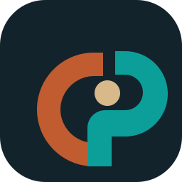

Color role
Deep Ink
#13232C
Field Teal
#0C7C78
Trade Rust
#C05C2F
Paper Sand
#D7B98A
Brand System
This direction is built to feel credible, operational, and premium enough for launch, paid traffic, sales decks, and AI-facing web presence. The identity avoids startup-tech gloss and leans into trust, fieldwork, and sourcing judgment.
Core rule
Do not choose one version only.
China Partner Hub should use one brand system with two approved expressions: the full logo for places where the brand name needs to be read, and the icon-only version for places where the mark must stay clear at small size.
Primary mark
Use this for the website header and footer, proposals, pitch decks, PDF covers, social banners, and anywhere the full company name should be visible.
App icon / favicon

Use this for WhatsApp profile, LinkedIn profile photo, favicon, browser tab, app shortcuts, and any tight square or circular crop where text would become unreadable.
Platform usage matrix
| Platform | Use | Recommended asset |
|---|---|---|
| Website navigation | Brand name should read clearly | Primary mark |
| Website footer | Brand reinforcement | Primary mark |
| LinkedIn profile photo | Small circular crop | Icon only |
| LinkedIn banner | Readability and corporate presence | Primary mark |
| WhatsApp profile photo | Tiny round avatar | Icon only |
| Favicon / app shortcut | Very small size | Icon only |
| PDF proposal cover | Formal presentation | Primary mark |
| Deck / quotation pages | Ongoing brand signature | Primary mark, with icon as secondary accent if needed |
Color role
Deep Ink
#13232C
Field Teal
#0C7C78
Trade Rust
#C05C2F
Paper Sand
#D7B98A
Typography
Newsreader
Headlines
Public Sans
Body and UI
The pairing reads more like a serious editorial business site than a default startup template.
Brand voice
Use across launch
Next brand tasks